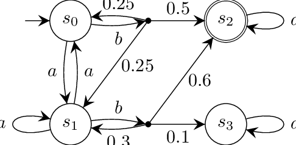
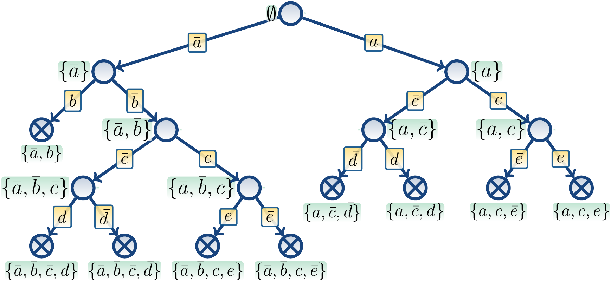
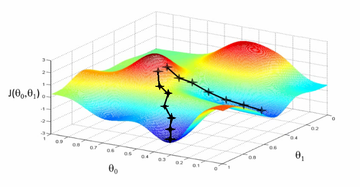
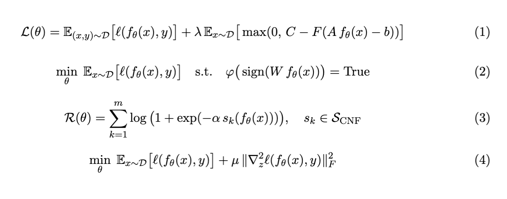

Deterministic ArchitectureBuilding control layers that force probabilistic agents to adhere to formal logic structures, enabling verifiable reasoning.
Coherascent Labs leads research at the intersection of Neuro-Symbolic AI and Mathematical Optimization, grounded in prior work building production-grade autonomous agents and GPT-style Transformers with a focus on rigor and reproducibility. The long-term goal is to reduce hallucinations in generative models by grounding outputs in formal logic and mathematically coherent constraints.

Deterministic ArchitectureBuilding control layers that force probabilistic agents to adhere to formal logic structures, enabling verifiable reasoning.

Continuous DPLLInvestigating how SAT-style reasoning can be expressed inside differentiable vector spaces for scalable inference.

Optimization CognitionDesigning gradient ascent pathways that minimize prediction error and reveal latent structure in cognitive state models.

Neuro-Symbolic BridgeConnecting explicit rule systems with data-driven Transformer architectures to unify formal and statistical reasoning.
Grounded in a deep understanding of large language model mechanics and prior work building production-grade autonomous agents.
Investigating the adaptation of discrete satisfiability algorithms (DPLL) into continuous vector spaces to address reasoning limitations in standard generative architectures.
Engineering architectural determinism by developing control layers that force probabilistic agents to adhere to formal logic, reducing hallucination and guiding outputs toward mathematically coherent truth rather than statistical plausibility.
Using Python, C++, and PyTorch to model cognitive states as high-dimensional optimization problems where prediction error is minimized via custom gradient ascent pathways.
Coherascent Labs is driven by the belief that Neuro-Symbolic AI connects explicit rules from SAT solving to data-driven concepts in machine learning and Transformer architectures, unifying disciplines that are often kept separate and enabling collaborative progress across logic, optimization, and deep learning communities.
Our research emphasizes a rigorous mathematical recorder for AI systems: second-order Taylor expansions and Hessian structure inform curvature-aware optimization; polynomial representations connect continuous dynamics to discrete constraints; Boolean satisfiability and conjunctive normal form (CNF) proofs ground symbolic reasoning; and high-dimensional multivariate calculus supports verification of learning dynamics in modern machine learning contexts.